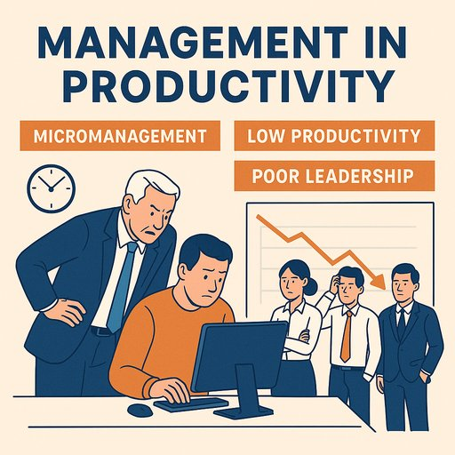

Publicado em 2025-06-02 16:23:06
Passaram-se mais de dez anos desde que a reflexão sobre a improductividade estrutural nas empresas portuguesas foi publicada — e, lamentavelmente, a situação pouco mudou.
Se antes falávamos de chefes que confundiam liderança com vigilância, hoje assistimos à mesma dinâmica, disfarçada por modismos como "agilidade", "coaching" e "cultura de proximidade" — quando, na prática, impera o velho medo e a obsessão pelo controlo.
Em muitas empresas, sobretudo nas PME nacionais e em organismos públicos, a gestão de pessoas continua assente numa lógica defensiva:
Ainda hoje, o modelo vigente parece ser este: "se vejo o colaborador a teclar no teclado, é porque está a produzir."
É o velho culto da "presença visível", herdado do tempo do relógio de ponto e da autoridade pela imposição.
A verdadeira liderança é cada vez mais rara. Os bons líderes:
Mas em Portugal, o que temos?
Chefes inseguros, muitos deles promovidos por tempo de casa, compadrio ou estatuto académico, sem nunca terem compreendido o que é liderar pessoas.
Gente que faz da posição hierárquica um escudo contra a inovação e o mérito.
É fácil culpar os salários baixos, os impostos ou a falta de investimento. Mas a verdade é que um dos maiores bloqueios ao progresso português está dentro das próprias empresas — no modelo mental da gestão.
A desmotivação, a fuga de talentos, o burnout silencioso… não nascem por acaso.
Nascem num ambiente onde ninguém sente que o seu esforço conta.
Portugal precisa de empresas que:
A produtividade não se impõe — constrói-se com propósito, confiança e liberdade de criar.
Ou teremos finalmente coragem de romper com as "tentações" do controlo absoluto, da chefia autoritária e da infantilização dos trabalhadores?
A resposta está nas mãos dos que ousam liderar com visão — e não apenas com organogramas.
Artigo de Francisco Gonçalves in Fragmentos de Caos